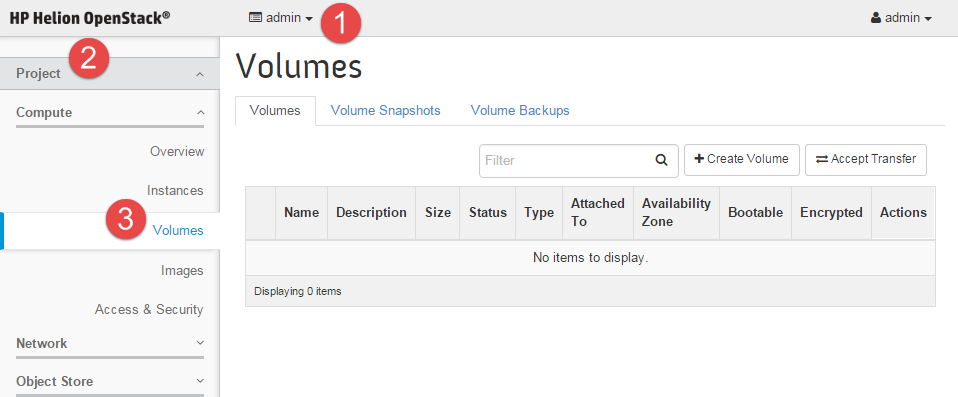
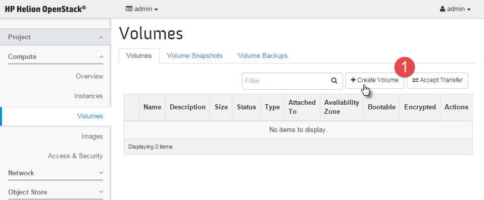
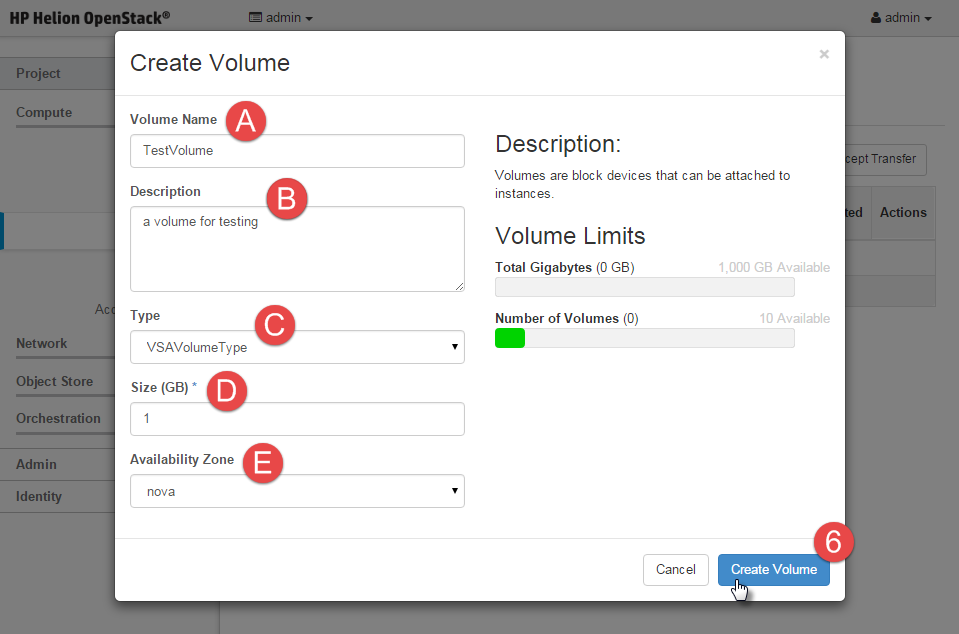
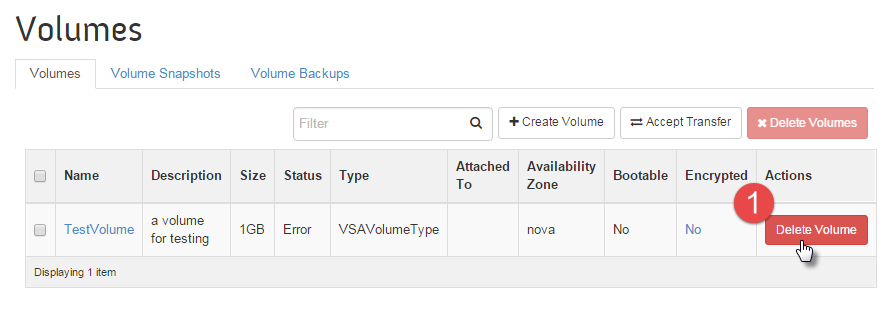
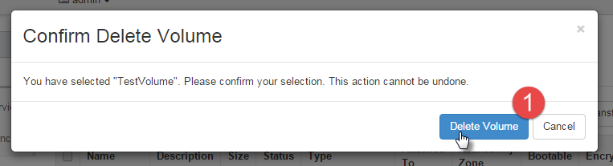

You can use these post-installation verification steps to confirm your installation:
Pre-requisites
The verification tests rely on you having a cloud image in your image (Glance) repository.
There is an ansible playbook that will assist in this process by downloading a Cirros linux
image from the internet and upload it to your repository. See Uploading an Image for Use for details
on how to complete this step.
Verifying Your Block Storage Backend
The sections below will show you the steps to verify that your Block Storage backend was
setup properly.
Create a Volume
Perform the following steps to create a volume using Horizon dashboard.
- Log into the Horizon dashboard. See Accessing Horizon for details.
- Under the Project menu in the navigation pane, click on Volumes under the
Compute subheading.

- On the Volumes tabs, click the Create Volume button to create a volume.

- In the Create Volume options, enter the required details into the fields and then
click the Create Volume button:
- Volume Name - This is the name you specify for your volume.
- Description (optional) - This is an optional description for the volume.
- Type - Select the volume type you have created for your volumes from the drop
down.
- Size (GB) - Enter the size, in GB, you would like the volume to be.
- Availability Zone - You can either leave this at the default option of Any
Availability Zone or select a specific zone from the drop down.

The dashboard will then show the volume you have just created.
Attach Volume to an Instance
Perform the following steps to attach a volume to an instance:
- Log into the Horizon dashboard. See Accessing Horizon for details.
- Under the Project menu in the navigation pane, click the Instances under
the Compute subheading.
- In the Action column, choose the Edit Attachments in the menu drop down
box next to the instance you want to attach the volume to.
- In the Attach To Instance drop-down, select the volume that you want to
attach.
- Edit the Device Name if necessary.
- Click Attach Volume to complete the action.
- Verify that the volume you attached is displayed in the Attached To columns on
the Volumes screen.
Detach Volume from Instance
Perform the following steps to detach the volume from instance:
- Log into the Horizon dashboard. See Accessing Horizon for details.
- Under the Project menu in the navigation pane, click the Instances under
the Compute subheading.
- Click the check box next to the name of the volume you want to detach.
- In the Action column, choose the Edit Attachments in the menu drop down
box next to the instance you want to attach the volume to.
- Click Detach Attachment. A confirmation dialog box appears.
- Click Detach Attachment to confirm the detachment of the volume from the
associated instance.
Delete Volume
Perform the following steps to delete a volume using Horizon dashboard:
- Log into the Horizon dashboard. See Accessing Horizon for details.
- Under the Project menu in the navigation pane, click on Volumes under
the Compute subheading.
- In the Actions column, click Delete Volume next to the volume you would
like to delete.

- To confirm and delete the volume, click Delete Volume again.

- Verify that the volume was removed from the Volumes screen.
Verifying Your Object Storage (Swift)
Validate That All Servers Have Been Added to the Swift Rings
- Run the _swift-validate-input-model.yml playbook as follows:
cd ~/scratch/ansible/next/hos/ansible
ansible-playbook -i hosts/verb_hosts _swift-validate-input-model.yml
- Search for output similar to the following. Specifically, look at the number of drives
that are proposed to be added.
TASK: [swiftlm-ring-supervisor | validate-input-model | Print report] *********
ok: [padawan-ccp-c1-m1-mgmt] => {
"var": {
"report.stdout_lines": [
"Need to add 0 devices",
"Need to remove 0 devices",
"Need to set weight on 0 devices"
]
}
}
- If the text contains "Need to add 0 devices" then the deploy was successful and no
further action is needed.
- If there are more drives need to be added, it indicates that the deploy failed on some
nodes and that you restarted the deploy to include those nodes. However, the nodes are not
in the Swift rings because enough time has not elapsed to allow the rings to be rebuilt.
You have two options to continue:
- Repeat the deploy. There are two steps involved as follows:
- Delete the ring builder files as described in Restarting the Object Storage Deployment
.
- Repeat the installation process starting by running the
site.yml playbook as described in the Deploy the Cloud
section of the installation instructions.
- Rebalance the rings several times until all drives are incorporated in the rings.
This process may take several hours to complete (because you need to wait one hour
between each rebalance). The steps are as follows:
- Change the min-part-time to 1 hour. See Changing
min-part-time in Swift.
- Use the "First phase of ring rebalance" and "Final rebalance phase" as described
in Applying
Input Model Changes to Existing Rings. The "Weight change phase of ring
rebalance" does not apply because you have not set the weight-step attribute at this
stage.
- Set the min-part-time to the recommended 16 hours as described in How to Change
min-part-time.
If you receive errors during the validation, read the Interpreting the
Swift Validate Input Model Output documentation.
Verify the Object Storage (Swift) Operations
Full details on how to verify the operations can be found in Checking Object Storage
Status.